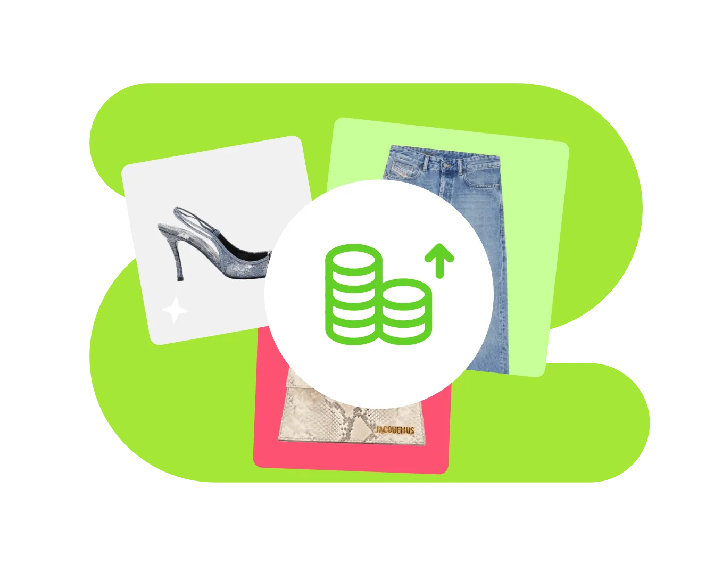
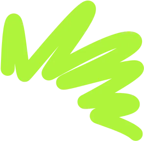
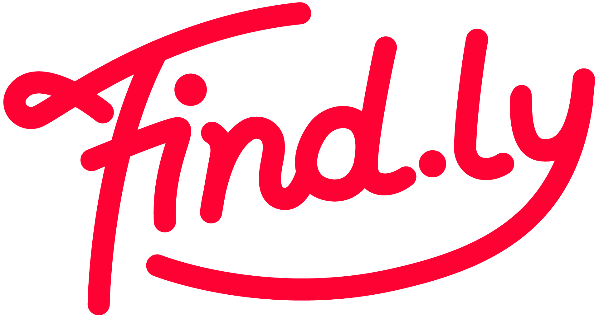

产品设计师 · Onboarding Case Study
Findly 是帮助 TikTok / Instagram / YouTube 创作者流量变现的平台。Bio 链接是博主在平台上的一切入口——但一次可用性测试发现，「起名字撞车」正在把新博主挡在门外。这个 Case 记录我如何修复它。


Findly 让海外社媒创作者把流量变成收入：创建个人 Bio 页面聚合各平台粉丝、在页面里挂商品橱窗赚 CPS 佣金、接品牌推广任务。而这一切的起点，是注册后创建一条形如 find.ly/johnny 的专属链接——它会被印在博主的 Instagram 主页、TikTok 简介里，可读、好记、能传播是它的核心价值。
可用性测试中我们观察到一个流程断点：用户创建 bio 时，心仪的名字（比如 johnny）大概率已被占用。系统只在用户提交后才报错，用户只能反复猜、反复试。这个断点带来三重伤害：
多次撞名后直接流失。Bio 创建率是项目的核心指标，每一个放弃的用户都是漏斗最顶端的失血。
一次又一次「已被占用」，把注册时的热情磨成挫败感——博主对平台的第一印象就此定型。
最后妥协取一个语义混乱的链接（johnny8837xx），不利于口头传播，用户自己也不满意。

我没有直接跳进「最常见的解法」，而是把问题拆成两条路径：让冲突不发生，或让冲突发生时代价最小。三个方案由此而来：
输入过程中即时反馈可用状态；一旦撞名，立刻给出多个「保证可用」的推荐链接，一键点选填入。
改掉平台规则，用系统自动生成的 ID（如 find.ly/u8f3k2）作为链接，从根上消灭撞名。
授权 TikTok / Instagram 后，直接复用博主已有的 handle 作为 bio 链接——输入前就消灭大部分冲突。
| 对比维度 | 方案 1 · 实时校验+推荐 | 方案 2 · 自动 ID | 方案 3 · Handle 导入 |
|---|---|---|---|
| 撞名问题 | ✓ 即时反馈 + 一键备选 | ✓ 彻底消灭 | ✓ 输入前大幅减少 |
| 传播性 / 归属感 | ✓ 完整保留 | ✗ 直接摧毁核心价值 | ✓ 完整保留 |
| 新用户摩擦 | 低 —— 无需任何前置动作 | 极低 | 高 —— 注册早期强制社交授权 |
| 工程成本 | 低 —— 前端校验 + 推荐接口 | 低 | 高 —— 多平台 OAuth 接入 |
| 结论 | 落地 ✓ | 放弃 ✗ | 暂缓，入长期路线图 ‖ |
方案 1 的成败全在细节里：校验太早是打扰，太晚没价值。我为这个输入框设计了完整的状态机——反馈只在「有意义的时刻」出现：
不足 3 个字符时不做任何校验，只显示中性格式提示。避免「刚打一个字母就报错」的负面暗示。
停止输入 350ms 后才发起校验，校验中显示轻量 loading，不打断输入节奏。
只给正向反馈：绿色描边 + “It's yours!”。Continue 按钮即刻点亮，奖励用户。
只有此时才出现推荐：3 个「已预检可用」的备选链接，点一下即填入，可换一批。
下面是一个可以真实操作的高保真原型，覆盖注册后的完整短流程：欢迎页 → 创建引导 → 输入链接（核心交互）→ 创建成功。
在输入框里试试 johnny —— 这个名字已经被占了，观察状态怎么变化。
注意：输入不足 3 个字符时，界面保持静默，不会急着报错。
撞名后，点任意一个绿色推荐标签一键填入；不满意就点 “↻ More options” 换一批。
看到 “It's yours!” 后点 Let's Get Started，领取你的链接。

Your account is ready. One last step before your fans can find you everywhere.
Takes about 30 seconds
Put it in your Instagram & TikTok bio. Fans tap once and get everything:
Your shop — earn commission on every order
Brand campaigns that match your vibe
All your platforms, connected in one page
Create your own personalized experience.
Your bio page is live. Share it everywhere:
新流程灰度上线后，对比旧版本的关键指标：
* 口径：Bio 创建率 = 注册后 24 小时内成功创建 bio 的用户占比；重试次数 = 提交后收到「已被占用」报错的平均次数。灰度样本约 2 万新注册用户，观察期 14 天。